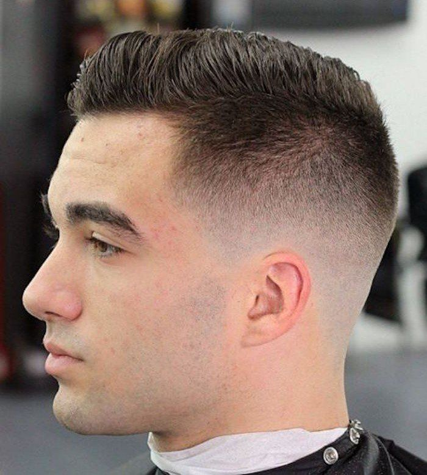

PARA REGRESAR A LA PAGINA PRINCIPAL TOQUE LA SIGUIENTE IMAGEN
| CORTES MODERNOS | |||
|---|---|---|---|
|
|||
|  | |||
| AQUI UN POCO DE INFORMACION SOBRE LOS CORTES MODERNOS | |
|---|---|
EN LA CTUALIDAD HAY DIVERSIDAD EN LOS TIPOS DE CORTE PERO EN UNA COSA QUE SE HA ESTADO ANALIZAND ES QUE LAS PERSONAS PREFIEREN LOS DIFUMINADOS O TAMBIEN DENOMINADOS "FADE" YA SE MEDIO, SUPERIOR, BAJO ENTRE OTROS TIPOS YA QUE LOGRA UN ATRACTIVO ESTETICO MUY BUENO EN LO QUE SON LOS HOMBRES, APARTE DE PONERSE A LA MODA CIERTOS PEINADOS O CORTES DE ALGUNOS FAMOSOS COMO LO SON LOS DE ESTE VIDEO: |
PARA VER MAS SOBRE LA HISTORIA DEL BARBERO DA CLICK EN EL GIF